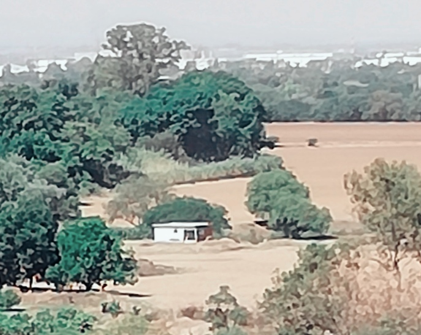

нιѕтσяιαѕ, мιтσѕ ч lεчεиdαѕ εи ѕιlασ
ＢＩＥＮＶＥＮＩＤＯ
Dentro de esta aplicación encontraras las auténticas historias y leyendas originarias de la ciudad de Silao en todo su esplendor ya que para poder traer hasta ti todas estas historias se ha entrevistado a la población, en especial a los mayores de edad ya que son personas con más experiencias vividas, esperamos que el contenido de la aplicación sea de tu agrado.

EL CERRITO DE LA CRUZ
 Los abuelos comentaban que los primeros franciscanos colocaban las cruces en las zonas donde evanjelizaban e inducian a la religion catolica a nuestros antepasados. En el caso de los Chichimecas que habitaron esta región de Silao comentaban que la colocaron aqui en lo que conocemos como el Cerrito de la cruz donde ya solo quedaba el monolito sin la cruz. El año pasado llegaron los organizadores del rally y destruyeron mas de 450 años de historia.
El presidente del comisariado ejidal y un grupo de ejidatarios comentan que no se les ha tomado en cuenta para nada en este año.
Siendo que es una autoridad federal que fue electo. Comenta que es una falta de respeto ya que usan terrenos del ejido de Chichimequillas principalmente el cerrito de la cruz donde nunca autorizaron derrumbar la base de la cruz.
Los abuelos comentaban que los primeros franciscanos colocaban las cruces en las zonas donde evanjelizaban e inducian a la religion catolica a nuestros antepasados. En el caso de los Chichimecas que habitaron esta región de Silao comentaban que la colocaron aqui en lo que conocemos como el Cerrito de la cruz donde ya solo quedaba el monolito sin la cruz. El año pasado llegaron los organizadores del rally y destruyeron mas de 450 años de historia.
El presidente del comisariado ejidal y un grupo de ejidatarios comentan que no se les ha tomado en cuenta para nada en este año.
Siendo que es una autoridad federal que fue electo. Comenta que es una falta de respeto ya que usan terrenos del ejido de Chichimequillas principalmente el cerrito de la cruz donde nunca autorizaron derrumbar la base de la cruz.
EL CERRO DE LA NIÑA ENCANTADA
Cuentan que dentro de la cueva que se encuentra en el cerro de la mesa, vive dentro una niña que está encantada convertida en serpiente.
Quien logre llevarla cargada al templo de la comunidad de Chichimequillas, le quitara e encanto y se convertirá en esa hermosa doncella, le entregara todos los tesoros que hay dentro de la cueva.
Aquel hombre que la lleve escuchara ruidos escalofriantes estruendosos que lo intentaran hacer voltear para atrás, si llega a voltear se convertirá en piedra y en ese instante la serpiente regresa a la cueva hasta que otro hombre la intente llevarla.
Hasta el momento nadie ha logrado este pedido.
Mito o realidad… eso es lo que la gente cuenta, varios hombres se han topado con la serpiente, pero no se atreven a llevarla por el miedo a fracasar. (en realidad tienen miedo al éxito).
La cueva se abre dos veces al año jueves santo y el jueves de la asunción, día que se realizan las fiestas del santo patrono de la comunidad.
La gente grande dice que en realidad los tesoros que se encuentran dentro de la cueva y que dará la niña encantada, no son dinero, joyas o metales preciosos, en realidad son los valores, para lograr ser felices y vivir en plenitud…ahí está la alegría, la felicidad, la armonía el compañerismo, el perdón, el amor a nuestros semejante etc.
Eso es lo que nos quiere dar la niña convertida en serpiente en la cueva encantada.
Y solo cuando logremos manejar nuestros miedos, sin tener miedo al fracaso. Lograremos el éxito y seremos merecedores de recibir los tesoros mencionados.
Mira Omar: En la versión que recuerdo de la revista, decía que el dueño de la hacienda, no le permitió a su hija que se enamorara de cierto hombre pobre y ella opto por escaparse y perderse en el cerro.
El padre al ver la desobediencia de su hija le envió un conjuro que la convirtió en serpiente.
No recuerdo si ella se enamora de un joven pobre o de un toro, total que al padre no le pareció el enamoramiento de su hija. y la mando a matar al cerro y el verdugo lanzo el conjuro y la dejo libre convertida en serpiente.
Nota: si la leyenda habla del tiempo de las haciendas esta pudo surgir por los años de1550-l600 aprox, cuando se comenzaron a construir las haciendas con el descubrimiento de las minas de plata, en Guanajuato.
Si bien la historia es un poco parecida a la del cerro de la bufa, me comentan que este tipo de historias es común en lugares donde se encuentran cuevas.
EL TORITO (EX-HACIENDA DE CHICHIMEQUILLAS)
Danza del Torito es una de las más representativas del municipio de Silao, en el bello estado de Guanajuato. Está danza nació a mediados del siglo XIX, aproximadamente en el año 1831, en la “Ex Hacienda de Chichimequillas”, Perteneciente al municipio de Silao.
hablamos de una tradicional danza oriunda de la ciudad de Silao, municipio de Guanajuato, está narra a través del baile, los hechos ocurridos en la Ex Hacienda de Chichimequillas, aproximadamente en el año de 1831.
La historia cuenta que ,Justo en medio de la fiesta, un toro embravecido por el diablo decide unirse a la celebración causando estragos en la hacienda hasta que se enfrenta al Charro hacendado seguido del Caporal (O Mulita), La Maringuiá, La Borracha, El Moco (O Jorobado), El Viejito (O Hermitaño), al mismo Diablo y finalizando con La Muerte, tratando de domar al animal en ese respectivo orden donde la muerte da fin a la faena del astado y en el proceso arrebatando la vida de cada personaje, la danza por si sola hace una analogía sobre todos los momentos a los que nos enfrentamos durante nuestras vidas hasta llegar a la muerte, mediante personajes de máscaras grotescas y un toque de algarabía y picardía al ejecutarla.
Cada uno de los personajes participa con su propia y singular danza, la música se compone únicamente por una persona que toca la flauta y otra que toca el tambor, actualmente con diferentes versiones de la misma, en algunos lugares aledaños a Silao se ha añadido un cántico que acompaña la pieza musical de cada personaje que participa, del mismo modo de manera negativa agregando personajes ajenos a la danza, de cualquier manera la tradición sigue teniendo la aceptación y cariño de su gente hasta el día de hoy.
Así que, si escuchas el sonido de la flauta acompañado del resonar del tambor es momento de disfrutar de nuestra maravillosa danza.
LA NIÑA DE LA BIBLIOTECA
La leyenda cuenta que por allá de los años 1890 a 1910 el cuartel o casa de la cultura como la conocemos en la actualidad, fue ocupado como cuartel de la federación, se presume que para ese entonces a los soldados solo se les permitían las visitas de sus mujeres en ciertos días, con un límite de tiempo, pero se les tenía prohibido procrear hijos, pues tenían la creencia de que solo vendrían a sufrir, por tal motivo solo los comandantes o los jefes eran los que podían traer familia, pero era más esperado y mejor recibido un varón, para poder integrarlo al batallón, además de que a las mujeres solo se les usaba domésticamente, sexualmente, etc. Es aquí donde se desarrolla esta leyenda, uno de los soldados del cual su nombre se desconoce tuvo una hija, el preocupado porque dentro del batallón no se dieran cuenta tomo la decisión de matar a su hija, creyendo que así le evitaría el sufrir, así que, un día se encontraba con su hija jugando decidió tomarla, y matarla con todo el dolor de su corazón pero pensando siempre en que no sufriera, después de muchos años, se tomaron algunos salones de este cuartel para dar origen a la actual casa de la cultura en Silao, pero, en este salón en especifico donde la niña fue matada brutalmente por su padre, se creó la biblioteca principal del municipio, testimonios de quienes han estado trabajando en estas instalaciones aseguran que se puede escuchar a la niña deambular por los pasillos del lugar, pues se escucha cuando corre, juega, mueve libros, abre las sillas dentro del lugar, disfrutando al menos los últimos momentos que paso con su padre antes de que este diera fin a la vida de su pequeña.
Así que podrías ir a leer un libro interesante en la biblioteca, podrías toparte con la niña y… ¡JUGAR UN POCO!
EL SOLDADO VIGILANTE
Esta leyenda se desarrolla en el cuartel o casa de la cultura ,cuenta la leyenda que hace 120 años aproximadamente después de que paso la guerra en Silao la cual cobro gran cantidad de soldados que comprometidos con su deber cumplieron, uno de los soldados sobrevivientes el cual se encargaba de dar la hora o el llamado serenero en aquel tiempo, falleció al poco tiempo, se cree estaba enfermo, por lo cual su muerte fue natural, pero en la actualidad se han dado testimonios de que si vas por las noches a las instalaciones de la casa de la cultura a cierta hora, se logra apreciar la silueta de este soldado, tan solo pasa deambulando el lugar haciendo lo que acostumbraba como su trabajo, se presume que solo pasa, grita la hora y se va desvaneciendo de entre el lugar, aunque si bien no se mete con nadie es escalofriante tan solo ver el espíritu deambular.